Solución de Problemas usando sistemas de ecuaciones 2x2
Hemos llegado a la parte final de esta carrera y, por lo tanto, a la aplicación de todos los conceptos trabajados a través de los capítulos anteriores.
Demos inicio a los ejemplos.
- El triplo de un número excede en 60 unidades al tercio del mismo número. Hallar el número
- Llamemos n al número desconocido
- Organicemos la ecuación:
- 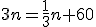
- Despejemos la variable n
- 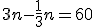
- Resolvamos la operación
- 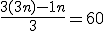
- 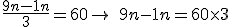
- 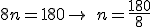
- 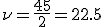
- Respuesta: El número es

- ¿Qué número hay que sumar al numerador y al denominador de la fracción 7/13, para obtener una fracción equivalente a 2/3?
- n = número a sumar
- Ecuación
- 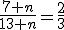
- Resolvemos

- 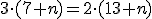


- 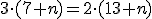
- Respuesta = El número que se debe sumar a ambos términos es 5
- La suma de dos números es 350. La diferencia del menor y los 3/5 del mayor equivale a la diferencia entre el mayor y los 17/15 del menor. Hallar los números.
- X= Número mayor
- Y= Número menor
- Sistema:
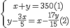
-
- despejamos y en (1)
- 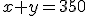
- 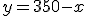
- Reemplazamos y en(2) y resolvemos
- 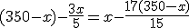
- Multiplicamos cada uno de los términos de la ecuación por el m.c.m. de los denominadores que es 15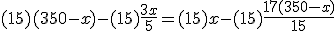
- 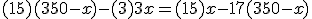
- 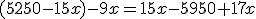


- Reemplazamos X en (1)

- Despejamos Y....


- Respuesta: Los números son 200 y 150
- despejamos y en (1)
Complementa tus conocimientos observando el siguiente video del profe Wil